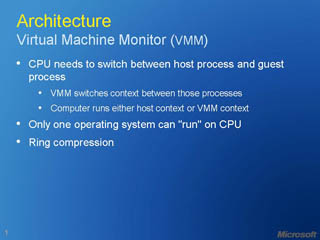

Microsoft Virtualisation: Today and Tomorrow
Speaker(s): Ronald Beekelaar
Managing a Mixed Virtual/Physical Environment: Tools and Techniques

Speaker(s): Ronald Beekelaar
Microsoft Virtualisation Deep Dive
Speaker(s): Ronald Beekelaar
Practical Advice on Adoption, Deployment and Migration
 Speaker(s): Ronald Beekelaar
Speaker(s): Ronald Beekelaar